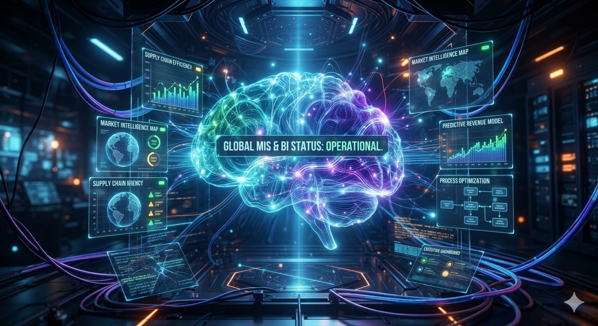

MIS & AI EthicsWebsite OverviewAudrey BroussardOctober 23, 2026 Welcome to Ethics in Intelligent Systems! I am so happy you have decided to take the time to take a deep dive into Management Information Systems and the ethical use of AI. While artificial intelligence seems to be just about everywhere, and, in everything. It is important to educate ourselves over the dangers of this new world. I encourage you to explore our information over AI ethics, security, and learn a little bit about myself and my mission. Once again thank you for your interest in my website, happy reading! AI polished version: Welcome to Ethics in Intelligent Systems! I am thrilled that you are taking the time to dive deep into Management Information Systems and the ethical implications of artificial intelligence. While AI seems to be everywhere and in everything today, it is vital that we educate ourselves on the challenges and responsibilities of this digital era. I encourage you to explore the insights here on AI ethics and security, and to learn more about my background and mission. Thank you again for your interest, and happy reading! MIS Topic Overview
|